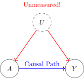
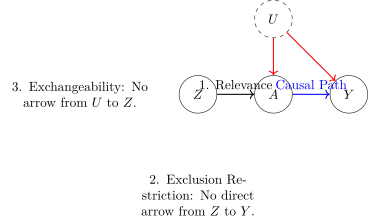

Department of Mathematics and Statistics, University of New Mexico
Published
Oct-07-2025
Overview
Welcome to Week 8. To this point in the course, our methods for causal inference have all relied on a single, powerful, but untestable assumption: conditional exchangeability. We have assumed that we have measured a sufficient set of covariates, \(L\), to control for all common causes of the treatment and outcome. But what if we haven’t? What if there is a strong, unmeasured confounder—like genetic predisposition, patient motivation, or latent “ability”—that we simply cannot adjust for?
In this scenario, all our previous methods (regression, matching, weighting, g-computation) will fail to produce an unbiased estimate. This week, we introduce a fundamentally different and remarkably clever approach for when the “no unmeasured confounding” assumption is untenable: Instrumental Variables (IV).
The IV method leverages a special kind of variable—the instrument, \(Z\)—that is “as-if” randomly assigned and influences the treatment but has no direct effect on the outcome. By exploiting the exogenous variation in the treatment induced by this instrument, we can isolate the causal effect of the treatment, even in the presence of strong unmeasured confounding. However, this power comes with a significant trade-off. As we will see, the IV estimate does not typically recover the Average Treatment Effect (ATE) for the whole population, but rather a Local Average Treatment Effect (LATE) for the specific subpopulation of “compliers” whose behavior is changed by the instrument.
Learning Objectives
By the end of this week’s module and lab, you will be able to:
Define an instrumental variable and articulate the three core IV assumptions: Relevance, Exclusion Restriction, and Exchangeability.
Represent the causal structure of an IV analysis on a Directed Acyclic Graph (DAG) and explain how the instrument isolates a causal pathway despite an open backdoor path.
Calculate the IV estimate of a causal effect by hand using the Wald estimator (the ratio of the reduced form to the first stage).
Implement a two-stage least squares (2SLS) regression in R using the ivreg package to estimate a causal effect.
Define the Local Average Treatment Effect (LATE) and the “complier” subpopulation it applies to, and contrast this with the Average Treatment Effect (ATE).
R Packages
This week, we’ll introduce the ivreg package, the standard for IV estimation in R.
Code
if (!require("pacman")) {install.packages("pacman")}pacman::p_load( tidyverse, # For data manipulation and visualization ggdag, # For plotting DAGs dagitty, # For DAG logic broom, # For tidying model outputs knitr, # For table formatting ivreg, # For instrumental variable regression stargazer # For creating comparison tables of models)# A consistent plot themetheme_set(theme_minimal(base_size =14))
Comprehensive Topic Explanation
The Problem: Unmeasured Confounding
All methods we have studied thus far—regression, matching, IPTW, g-computation—are designed to control for confounding by adjusting for a measured set of covariates \(L\). They all fail if there is an unmeasured common cause, \(U\), of the treatment \(A\) and outcome \(Y\).

The problem of unmeasured confounding. The backdoor path \(A \leftarrow U \rightarrow Y\) is open, but we cannot close it by conditioning because \(U\) is unobserved.
In this situation, the association between \(A\) and \(Y\) is a biased mix of the true causal effect and the spurious correlation induced by \(U\).
The Instrumental Variable Solution
An instrumental variable, \(Z\), is a variable that breaks this deadlock by introducing a source of “clean” or “exogenous” variation into the treatment. It acts as a handle on the system, allowing us to see how the outcome responds to changes in the treatment that are unrelated to the unmeasured confounder \(U\).
For a variable \(Z\) to be a valid instrument, it must satisfy three core assumptions:
ImportantThe Three Core IV Assumptions
Relevance (The “First Stage”): The instrument \(Z\) must have a causal effect on the treatment \(A\). (\(Z \rightarrow A\)).
In plain English: The instrument has to actually influence the treatment decision. If it doesn’t, it’s useless. This is a testable assumption.
Exclusion Restriction: The instrument \(Z\) affects the outcome \(Y\)only through its effect on the treatment \(A\). There is no direct arrow from \(Z\) to \(Y\).
In plain English: The instrument itself doesn’t cause the outcome. Any association between the instrument and the outcome must be fully mediated by the treatment. This is an untestable assumption that relies on subject matter knowledge.
Exchangeability (or Independence): The instrument \(Z\) does not share any common causes with the outcome \(Y\). In other words, there is no unmeasured confounding of the \(Z-Y\) relationship.
In plain English: The instrument must be “as-if” randomly assigned with respect to the outcome and any unmeasured factors \(U\) that affect the outcome. This is also an untestable assumption.
The causal structure of a valid IV is shown below.

The DAG for a valid instrumental variable, \(Z\). \(Z\) allows us to estimate the \(A \rightarrow Y\) effect despite the confounding from \(U\).
The IV Estimator: The Wald Estimator
The magic of IV lies in a simple ratio. The IV estimate of the causal effect is the effect of the instrument on the outcome (the reduced form) divided by the effect of the instrument on the treatment (the first stage). This is known as the Wald estimator.
Rationale: The numerator captures the total change in \(Y\) associated with the instrument. Since the instrument is assumed to only affect \(Y\) through \(A\), this change must be due to the instrument’s effect on \(A\). The denominator tells us exactly how much the instrument changed \(A\). By dividing the two, we are essentially calculating the change in \(Y\)per unit of change in A that was induced by the instrument. This isolates the causal effect.
Tip🧠 Insight
The IV estimator can be thought of as a “natural experiment” where the instrument randomly nudges some individuals into treatment. By comparing outcomes between those nudged into treatment and those not, we can infer the causal effect of the treatment itself.
The IV Estimand: Local Average Treatment Effect (LATE)
A critical nuance is that the IV estimator does not, in general, recover the Average Treatment Effect (ATE) for the whole population. Instead, it recovers the Local Average Treatment Effect (LATE).
To understand this, we divide the population into four “principal strata” based on how they would react to the instrument:
Compliers: Individuals who would take the treatment if encouraged by the instrument (\(Z=1\)) but not otherwise (\(Z=0\)). These are the people whose behavior is changed by the instrument.
Always-Takers: Individuals who take the treatment regardless of the instrument’s value.
Never-Takers: Individuals who do not take the treatment regardless of the instrument’s value.
Defiers: Individuals who do the opposite of what the instrument suggests (e.g., refuse treatment only when encouraged). This group is typically assumed not to exist (the monotonicity assumption).
The IV estimator isolates the causal effect only for the group of compliers.
NoteLATE vs. ATE
ATE = \(E[Y^1 - Y^0]\) (Average effect for everyone)
LATE = \(E[Y^1 - Y^0 | \text{person is a complier}]\) (Average effect for compliers only)
LATE equals ATE only under the strong assumption of homogeneous treatment effects (the effect is the same for everyone) or if the compliers are perfectly representative of the entire population.
Intuitive Clarifications of Challenging Ideas
Analogy: The Encouragement Design
Imagine you want to know the effect of attending a tutoring session (\(A\)) on exam scores (\(Y\)). You know that unmeasured student motivation (\(U\)) is a huge confounder—motivated students are more likely to attend tutoring and also get better grades.
You can’t run a full RCT, but you can run an encouragement design. You randomly send a personalized encouragement email (\(Z=1\)) to half the students, while the other half gets no email (\(Z=0\)).
Relevance: The email should increase the probability of attending tutoring (\(Z \rightarrow A\)).
Exclusion Restriction: The email itself (a few lines of text) shouldn’t have a direct effect on the exam score, other than by getting students to attend the tutoring session.
Exchangeability: Since you randomized the email, the group who got the email is, on average, just as motivated as the group who didn’t.
The IV Logic in Action:
First Stage: You measure how effective the encouragement was. Suppose 60% of encouraged students attended tutoring, vs. 40% of un-encouraged students. The first stage effect is \(0.60 - 0.40 = 0.20\). The email increased attendance by 20 percentage points.
Reduced Form: You compare the final exam scores. Suppose the encouraged group scored 85 on average, while the un-encouraged group scored 81. The reduced form effect is \(85 - 81 = 4\) points.
The IV Estimate (LATE): The Wald estimate is \(\frac{4}{0.20} = 20\).
Interpretation: A 20 percentage point increase in tutoring attendance (caused by the email) led to a 4-point increase in average exam scores. Therefore, the effect of tutoring per person who was induced to attend is 20 points. This 20-point effect is the LATE—it is the causal effect of tutoring specifically for the “compliers,” the 20% of students who went to tutoring because they got the email. We learn nothing about the effect on students who would have gone anyway (always-takers) or would have never gone (never-takers).
Simple, Hand-Calculation Numerical Example(s)
Let’s use a small dataset to calculate the IV estimate by hand. We want to estimate the effect of having a college degree (\(A\)) on annual income (\(Y\), in thousands). We suspect “ability” (\(U\)) is an unmeasured confounder. Our instrument (\(Z\)) is whether the person grew up near a college (1) or not (0).
NoteAssumptions Check
Relevance: Growing up near a college increases the likelihood of getting a degree.
Exclusion Restriction: Growing up near a college does not directly affect income, except through its effect on getting a degree.
Exchangeability: Growing up near a college is independent of unmeasured ability (plausible if college locations are random with respect to family background).
Observed Data (10 people):
Person
Near College (Z)
Has Degree (A)
Income (Y)
1
1
1
90
2
1
1
80
3
1
1
70
4
1
0
50
5
1
0
40
6
0
1
85
7
0
0
45
8
0
0
35
9
0
0
30
10
0
0
25
Step 1: Calculate the First Stage (Effect of Z on A)
Group Z=1 (Near College): 5 people. 3 have degrees. Mean of A = \(3/5 = 0.6\).
Group Z=0 (Far from College): 5 people. 1 has a degree. Mean of A = \(1/5 = 0.2\).
Interpretation: Growing up near a college is associated with a $22k increase in average income.
Step 3: Calculate the IV Estimate (LATE)
IV Estimate = \(\frac{\text{Reduced Form}}{\text{First Stage}} = \frac{22}{0.4} = 55\).
Final Interpretation: Our estimate for the causal effect of obtaining a college degree is a $55,000 increase in annual income. This effect applies specifically to the “compliers”—the subpopulation of individuals who are induced to get a degree because they live near a college.
R Code Examples & Interpretation
Let’s simulate data where there is unmeasured confounding and use ivreg to recover the true causal effect.
Step 1: Simulate Confounded Data
Code
set.seed(123)n <-2000# Z is a Random Instrument (e.g., Encouragement email)Z <-rbinom(n, 1, 0.5)# U is an Unmeasured Confounder (e.g., motivation)U <-rnorm(n, 0, 1)# A (treatment) is Caused by Z and UA <-rbinom(n, 1, plogis(0.5* Z +1.2* U))# Y (outcome) is Caused by A and U. True Effect of A is 10.Y <-50+10* A +8* U +rnorm(n, 0, 5)iv_df <-tibble(Y, A, Z, U)
Step 2: Compare OLS (Biased) and IV (Unbiased)
We will use Two-Stage Least Squares (2SLS), which is what the ivreg function implements.
Stage 1: Regress the treatment A on the instrument Z to get the predicted treatment, \(\hat{A}\).
Stage 2: Regress the outcome Y on the predicted treatment \(\hat{A}\).
Code
# The Naive, Biased OLS Modelols_model <-lm(Y ~ A, data = iv_df)# The Correct IV Model Using Ivreg# The Syntax `Y ~ A | Z` Means: Model Y as a Function of A, where A is Instrumented by Z.iv_model <-ivreg(Y ~ A | Z, data = iv_df)# Compare the Models Using Stargazerstargazer( ols_model, iv_model,type ="text",column.labels =c("OLS (Biased)", "IV (2SLS)"),dep.var.labels.include =FALSE,covariate.labels ="Treatment (A)",omit.stat =c("rsq", "adj.rsq", "f", "ser"))
OLS (Biased) Result: The OLS model estimates the effect of A to be 17.843. This is severely biased upwards from the true effect of 10. This is because the unmeasured confounder U (motivation) is positively associated with both treatment A and outcome Y, creating positive confounding bias.
IV (2SLS) Result: The ivreg model estimates the effect of A to be 9.308, which is close to our true simulated effect of 10. By using only the variation in A that is driven by the random instrument Z, the model successfully filtered out the confounding effect of U and recovered the true causal effect.
Step 3: Checking the First Stage
A crucial diagnostic is to check the strength of the instrument. A weak instrument (one that is only weakly correlated with the treatment) can lead to very noisy and biased IV estimates.
Code
# Manually Run the First-stage Regressionfirst_stage_model <-lm(A ~ Z, data = iv_df)# The F-statistic from This Model is Our Key Diagnostic.summary(first_stage_model)
Call:
lm(formula = A ~ Z, data = iv_df)
Residuals:
Min 1Q Median 3Q Max
-0.5929 -0.4822 0.4071 0.4071 0.5178
Coefficients:
Estimate Std. Error t value Pr(>|t|)
(Intercept) 0.48218 0.01560 30.908 < 2e-16 ***
Z 0.11075 0.02217 4.995 6.4e-07 ***
---
Signif. codes: 0 '***' 0.001 '**' 0.01 '*' 0.05 '.' 0.1 ' ' 1
Residual standard error: 0.4958 on 1998 degrees of freedom
Multiple R-squared: 0.01233, Adjusted R-squared: 0.01184
F-statistic: 24.95 on 1 and 1998 DF, p-value: 6.404e-07
Interpretation: The coefficient on Z is 0.111, which is our first stage effect. The F-statistic for the model is 24.947. A common rule of thumb is that an F-statistic > 10 indicates a sufficiently strong instrument. Since our F-statistic is well above 10, we can be confident that our instrument is not weak.
Hands-On R Lab
Lab: The Draft Lottery and Earnings
Purpose: This lab will give you hands-on experience with a classic IV application: using the Vietnam draft lottery as an instrument to estimate the causal effect of military service on long-term earnings.
Lab Objectives:
State the three IV assumptions in the context of the draft lottery.
Perform a first-stage regression to check the relevance of the instrument.
Perform a reduced-form regression to see the instrument’s effect on the outcome.
Calculate the LATE by hand using the Wald estimator.
Estimate the LATE using ivreg and compare the results.
Scenario: During the Vietnam War, the U.S. Selective Service used a lottery based on birth dates to determine who would be drafted. This lottery number (\(Z\)) was essentially random. It strongly predicted serving in the military (\(A\)), but it is assumed to have no other direct effect on a man’s future earnings (\(Y\)), except through military service. This makes it a powerful instrument to overcome the unmeasured confounding (e.g., ability, patriotism) that affects both volunteering for the military and future earnings. We will use a classic dataset from Cunningham (2021).
Task 1: Load Data and State Assumptions
First, let’s load the data. draft is our instrument (1 if lottery number made them eligible), veteran is our treatment, and log_weekly_wage is our outcome.
Instructions: In your own words, state the three IV assumptions for this analysis.
Relevance: …
Exclusion Restriction: …
Exchangeability: …
Solution to Task
Relevance: A man’s draft eligibility status must be a strong predictor of whether he actually served in the military.
Exclusion Restriction: Draft eligibility must affect a man’s later-life earnings only through its effect on his military service. There can be no direct effect (e.g., the psychological trauma of having a low lottery number).
Exchangeability: Draft eligibility status must be independent of any unmeasured characteristics (like innate ability or family background) that could also affect earnings. Since it was a lottery, this is a very plausible assumption.
Task 2: The First Stage and Reduced Form
Instructions:
Run a regression for the First Stage: veteran ~ draft. Interpret the coefficient. Is the instrument relevant? Check the F-statistic.
Run a regression for the Reduced Form: log_weekly_wage ~ draft. Interpret the coefficient.
Code
# TODO: Fit the First-stage Modelfirst_stage_draft <-lm(...)tidy(first_stage_draft)summary(first_stage_draft) # To see the F-statistic# TODO: Fit the Reduced-form Modelreduced_form_draft <-lm(...)tidy(reduced_form_draft)
Code
# First Stagefirst_stage_draft <-lm(veteran ~ draft, data = draft_df)tidy(first_stage_draft)summary(first_stage_draft)# Reduced Formreduced_form_draft <-lm(log_weekly_wage ~ draft, data = draft_df)tidy(reduced_form_draft)
Interpretation:
First Stage: The coefficient on draft is ~0.16. This means being draft-eligible increased the probability of becoming a veteran by about 16 percentage points. The F-statistic is very large (~94), so we have a strong instrument.
Reduced Form: The coefficient on draft is ~-0.03. This means being draft-eligible was associated with a ~3% decrease in weekly wages later in life.
Task 3: The IV Estimate (LATE)
Instructions:
Using the coefficients from your two models in Task 2, calculate the Wald estimate for the LATE by hand.
Use the ivreg() function to estimate the same effect. Verify that your hand calculation matches the ivreg output.
Write a one-sentence interpretation of the final result.
Code
# TODO: Get Coefficients from Your Previous Modelsfirst_stage_coef <-coef(first_stage_draft)["draft"]reduced_form_coef <-coef(reduced_form_draft)["draft"]# TODO: Calculate the Wald Estimatewald_estimate <- ...print(wald_estimate)# TODO: Use Ivreg to Confirmiv_model_draft <-ivreg(...)tidy(iv_model_draft)
Code
first_stage_coef <-coef(first_stage_draft)["draft"]reduced_form_coef <-coef(reduced_form_draft)["draft"]# Wald Estimate by Handwald_estimate <- reduced_form_coef / first_stage_coefprint(wald_estimate)# Using Ivregiv_model_draft <-ivreg(log_weekly_wage ~ veteran | draft, data = draft_df)tidy(iv_model_draft)
Interpretation: For men whose military service was determined by the draft lottery (the compliers), serving in the military caused an approximate 18.7% reduction in their weekly wages later in life.
Common Pitfalls & Checks
WarningThe Untestable Assumptions
Remember that two of the three core IV assumptions—Exclusion Restriction and Exchangeability—are not statistically testable. Their plausibility rests entirely on institutional knowledge and careful causal reasoning. A statistically strong instrument that violates these assumptions will produce a precise but incorrect answer. Always spend more time defending your instrument’s validity with words than with numbers.
ImportantA Weak Instrument is a Useless Instrument
A weak instrument (First Stage F-statistic < 10) is a major problem. Weak instruments can lead to IV estimates that are even more biased than naive OLS, and their confidence intervals will be enormous. If your instrument is weak, the analysis is generally not credible. You must find a stronger source of exogenous variation.
Advanced Teaching Activities & Interactivity
“Find the Flaw” IV Design Critique:
Activity: I will present three potential IV study designs. Each will have a subtle but fatal flaw in one of the three core assumptions.
Example 1 (Relevance Flaw): Using a person’s favorite color as an instrument for buying a blue car.
Example 2 (Exclusion Flaw): Using a doctor’s preference for a new drug as an instrument, when that doctor also provides better counseling, which directly affects the outcome.
Example 3 (Exchangeability Flaw): Using a patient’s insurance status as an instrument for getting a treatment, when insurance is also a proxy for socioeconomic status (an unmeasured confounder).
Task: In groups, identify which assumption is violated for each design and explain why.
Think-Pair-Share: Who are the Compliers?
Think: “Consider the classic IV study using distance to a hospital as an instrument for receiving a certain surgery. Who are the ‘compliers’ in this setting? Who are the ‘always-takers’ and ‘never-takers’? Is the LATE for these compliers likely to be higher or lower than the ATE for the whole population?”
Pair: Discuss with a neighbor.
Share: We will discuss how compliers in this context are likely rural patients for whom distance is a major barrier. Always-takers might be wealthy urban patients who will travel anywhere, and never-takers might be those with a philosophical objection to the surgery. The LATE for the rural compliers might be very different from the ATE.
Appendix: Advanced Theory & Derivations
Formal Derivation of the Wald Estimator as LATE
Here we show that under the IV assumptions plus monotonicity, the Wald estimator identifies the LATE.
Let \(Z\) be a binary instrument and \(A\) a binary treatment.
\(E[Y|Z=1] - E[Y|Z=0]\) can be written in terms of potential outcomes. By exchangeability (\(Y^z \indep Z\)), this is equal to \(E[Y^{z=1} - Y^{z=0}]\). By consistency and the exclusion restriction (Z only affects Y through A), this becomes \(E[Y^{A^{z=1}} - Y^{A^{z=0}}]\). Expanding over the principal strata (C=Complier, AT=Always-Taker, NT=Never-Taker): \(= E[Y^1 - Y^0 | C]P(C) + E[Y^1 - Y^1 | AT]P(AT) + E[Y^0 - Y^0 | NT]P(NT)\)\(= E[Y^1 - Y^0 | C]P(C)\)\(= \text{LATE} \times P(C)\)
The Denominator (First Stage):\(E[A|Z=1] - E[A|Z=0]\) can also be expanded. By exchangeability (\(A^z \indep Z\)), this is \(E[A^{z=1} - A^{z=0}]\). Expanding over strata: \(= E[1 - 0 | C]P(C) + E[1 - 1 | AT]P(AT) + E[0 - 0 | NT]P(NT)\)\(= 1 \times P(C) + 0 + 0 = P(C)\)
![]()